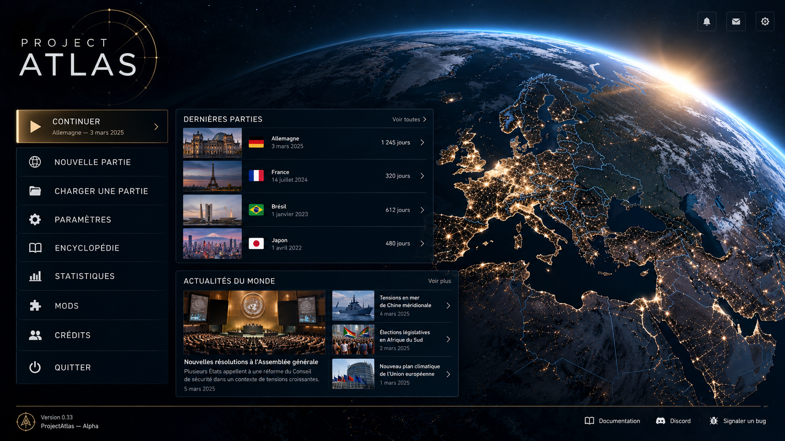
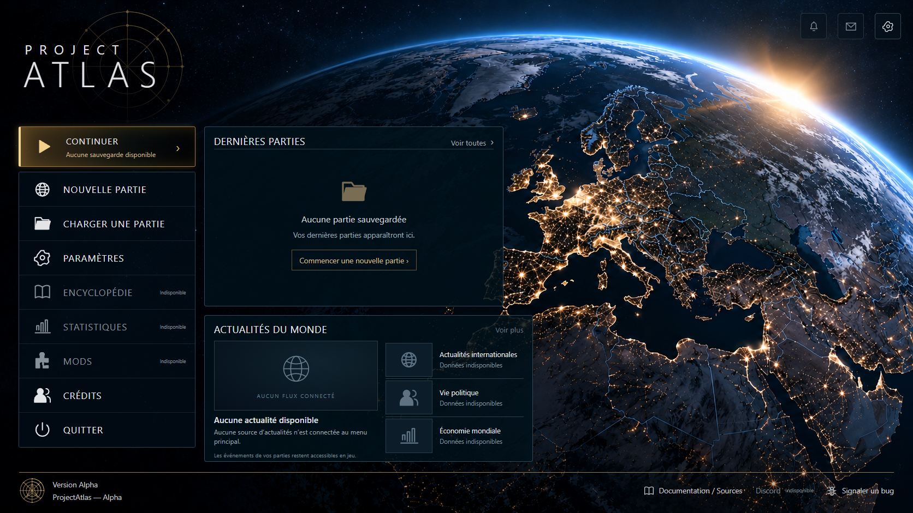

<!doctype html>
<html lang="fr"><meta charset="utf-8"><title>ProjectAtlas — comparaison du menu</title><style>
*{box-sizing:border-box}body{margin:0;background:#070e15;color:#e1e5eb;font:16px 'Segoe UI',Arial,sans-serif}header{padding:20px 28px;border-bottom:1px solid #766240}h1{font-size:22px;font-weight:400;margin:0 0 8px}p{margin:0;color:#a6b2be;font-size:14px}main{display:grid;grid-template-columns:1fr 1fr;gap:16px;padding:20px}figure{margin:0;min-width:0}figcaption{padding:0 0 10px;font-size:14px;color:#dfbd7e}img{display:block;width:100%;border:1px solid #304959}aside{padding:0 28px 24px;color:#a6b2be;line-height:1.6;font-size:14px}@media(max-width:900px){main{grid-template-columns:1fr}}
</style><header><h1>ProjectAtlas — comparaison avec la référence</h1><p>Référence fournie et captures du véritable menu React, à 1672 × 941.</p></header><main><figure><figcaption>Référence exacte fournie</figcaption></figure><figure><figcaption>Implémentation réelle — stockage vide</figcaption></figure></main><aside>Les panneaux conservent leur emplacement. Les parties et actualités fictives de la référence sont remplacées par des états vides explicites. Les fonctions absentes restent désactivées. Le globe est une image de fond statique indépendante des contrôles React.</aside></html>
